Before we can administrate in Active Directory and Group Policy through PowerShell, the Active Directory PowerShell module needs to be imported. The PowerShell Active Directory module is a collection of cmdlets that are designed to manage and administrate Active Directory Domain Services - (AD DS) and Active Directory Lightweight Directory Services (AD LDS) environments.
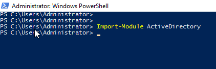1. To create a single AD user account, a template in a .ps1 file can be ready to go, where you can edit the attributes and run the script to quickly create the account.
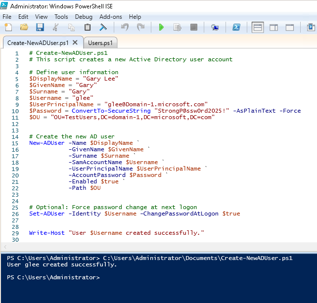 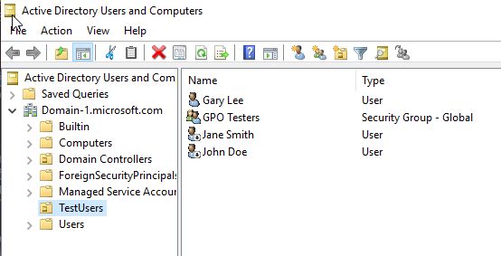1. The first step is to create a CSV, for this example, I'm using Notepad++ to create a .csv file with the following attributes.
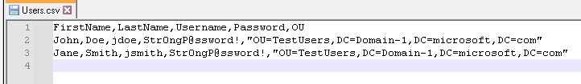2. Then I'm going to use this script to import the csv file to create two new user accounts in Active Directory.
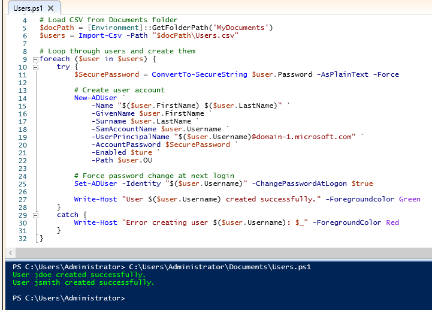3. Two new user accounts in Active Directory Users and Computers in the TestUsers OU.
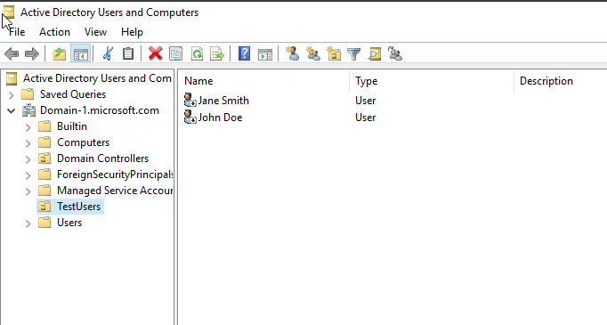1. To reset a single user account password, the following cmdlet can be run.
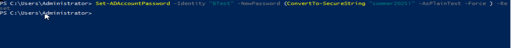2. Force user to change password at next logon.
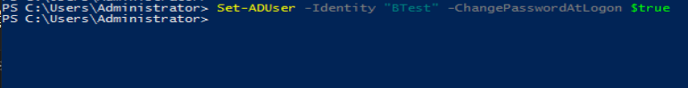1. If the user account is in a specific OU, you can link an existing GPO to that OU using:
THis links the Disable Control Panel GPO to the TestUsers OU, which applies to all users in that OU - unless Security Filtering is used to limit scope.
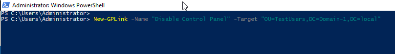1. First, grant the GPO permission to a specific user account:
This gives the user Read and Apply Group Policy permissions.
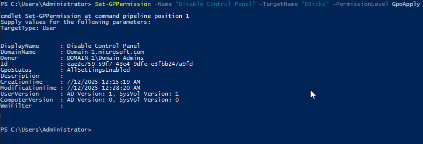 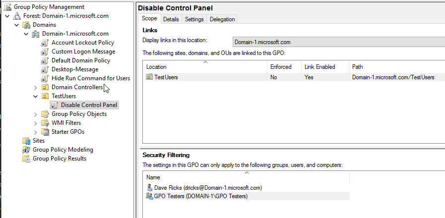2. Optional: Remove Authenticated Users from security filtering if you want only this user to be effected.
Be careful removing Authenticated Users - only do this if you're explicitly assigned permissions to the correct scope.
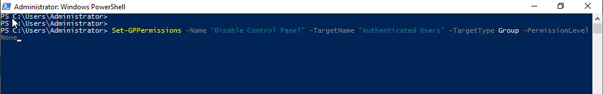